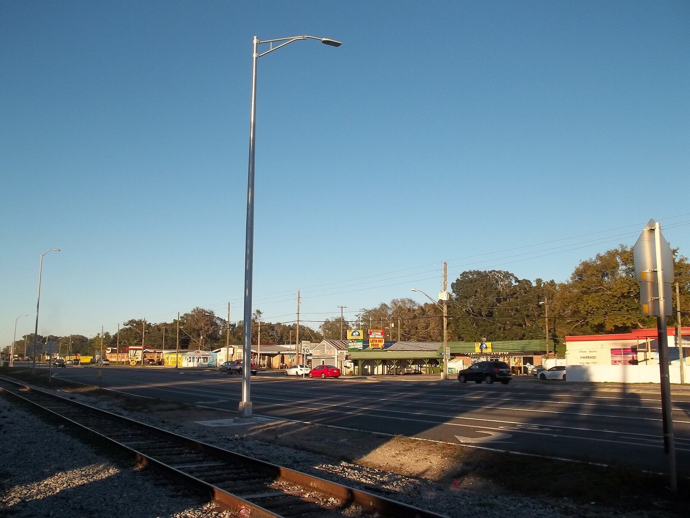
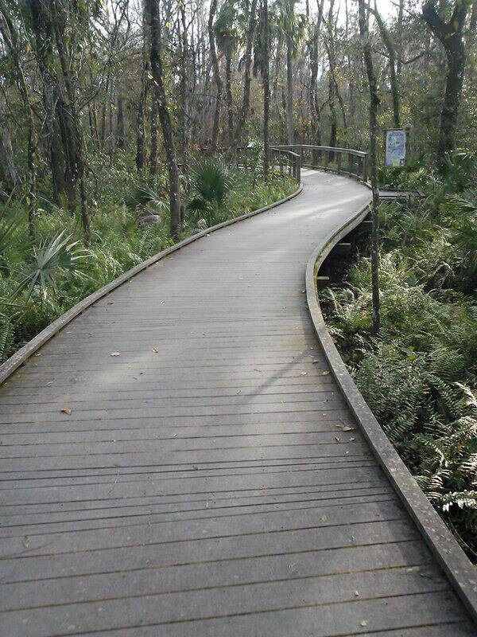

Retire the extra plan. Keep the protections.
Ask the County to retire the separate Community Plan, reconsider related restrictions and retain enforceable safeguards through the amendment process.
Community Plan vs. County Comprehensive Plan
Removing the Community Plan layer would change the planning framework; it would not leave Keystone–Odessa without planning rules.
An area-specific policy layer
Adds restrictions and requirements for roads, water and wastewater, density and commercial uses inside its boundary.
The countywide framework
Future land use, mobility, water, environmental and housing policies, carried out through the Land Development Code and current standards.
Should the look of a road matter more than the safety of the people using it?
We can value rural character and still question the restrictions that shape our roads.


Why limit the options before assessing the need?
The Community Plan prioritizes rural, two-lane road character and limits certain changes.
Assess safety, mobility and local conditions.
Countywide policies address road-user needs and context-sensitive design.
Should a road restriction be beyond question?
Gunn Highway is subject to expansion restrictions.
Reassess the restrictions.
County policy calls for reevaluating constrained roads before each long-range transportation plan update.
Does someone have to get hurt first?
The Community Plan discourages street lighting and allows it when public safety is at risk.
Lighting can respect its surroundings.
County policies address context-sensitive lighting and intersection visibility.
Why should rural character limit the discussion?
The Community Plan permits specified improvements and supports trails while retaining rural road character.
Make people's needs central to the assessment.
County policies address crossing visibility, walking, cycling and safe routes to schools.
Protect the character of the area. Question the rules that govern its roads.
Countywide policies already apply. Retiring the Community Plan and changing related restrictions would not automatically approve or fund road projects.
See the roads evidenceSource: Livable Communities Element (compilation dated June 26, 2026), Keystone–Odessa, transportation and lighting, p. 24.
From infrastructure limits to more response tools
Emphasizes water protection but has more limited infrastructure response options.
Provides a broader planning framework and more specific response tools.
Makes protection of water resources a priority, but does not contain the same requirement to consider soil conditions and permeability.
Requires development decisions to consider physical land and soil conditions, including permeability.
Does not contain a comparable policy for aging or failing septic systems.
Provides a pathway to respond when septic creates a documented environmental problem.
Does not create a specific septic/wastewater response for wellhead or wellfield protection areas.
Allows centralized service in certain Wellhead Resource Protection Areas and Tampa Bay Water Wellfield Mitigation Areas when conditions are met.
Calls for stormwater management plans, but does not set the same technical standard for cumulative flooding and water quality.
Requires stormwater technical standards to address cumulative impacts on flooding and water quality.
One Water Policy 4.3.7 excludes properties within the Keystone–Odessa Community Plan boundary from the wellhead/wellfield pathway described above.
The County framework provides more specific tools to respond to current water, septic, groundwater, and stormwater conditions.
See the water evidence →Two ways of managing growth and housing


Uses approximately one dwelling unit per five acres in the relevant areas.
Uses mapped land-use categories that establish maximum densities and intensities.
Favors a low-density, scattered residential pattern.
Rural density limits still apply, including the general one dwelling per five gross acres policy, with specified exceptions.
Its residential provisions do not directly address housing affordability.
Has housing goals and policies related to housing choice and affordability.
The residential policies focus strongly on maintaining the area's rural development pattern.
Supports tools including infill, small lots, accessory homes, and different housing types, with adequate infrastructure.
The County framework still protects rural-area density while also providing explicit policies for housing choice and affordability.
See the growth evidence →Source: County Plan housing policies and rural-area policies.
Keystone–Odessa will still be planned and managed.
Keystone–Odessa Community Plan
Area-specific policy layer
- 01Land Development Code
- 02Future Land Use Policies
- 03Mobility & Safety Policies
- 04Water & Environmental Policies
- 05Zoning & Development Standards
- 06Applicable Health / Engineering / Environmental Standards
The proposed change is a change to the policy layer that applies to Keystone–Odessa. The Countywide planning framework continues to apply.
Read the County framework source (PDF, opens in a new tab)Source: Livable Communities Element. Livable Communities compilation dated June 26, 2026. Effective dates: p. 3. County framework relationship: pp. 4–5. Keystone–Odessa: pp. 17–27. Transportation and lighting: p. 24.
Support the proposed change.
Read the full approved petition before you sign it. It asks the County to retire the separate Community Plan through the required public amendment processes.
Sources for this page
- Livable Communities ElementCompilation dated June 26, 2026. Effective dates p. 3; County framework relationship pp. 4–5; Keystone–Odessa pp. 17–27; transportation and lighting p. 24.
- Unincorporated Hillsborough County Comprehensive PlanOne Water Policy 4.3.7: wellhead / wellfield pathway and the Keystone–Odessa exclusion.
- How each comparison is builtCommunity Plan rule → reason for change → source → County policy → source.
How we read and cite these documents: Sources & Methods.